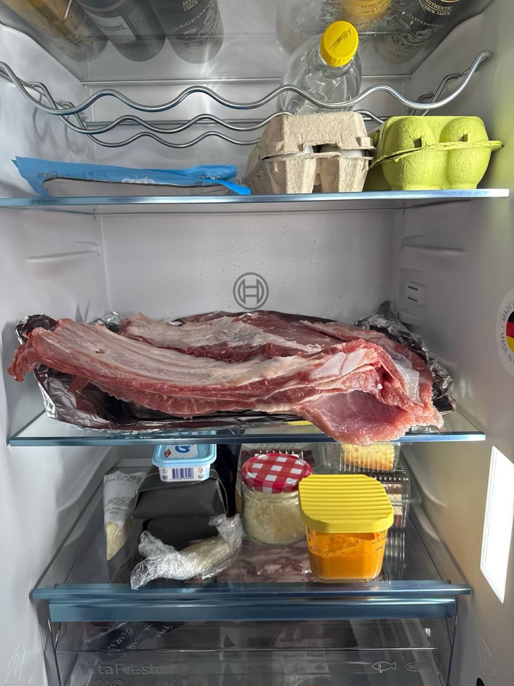
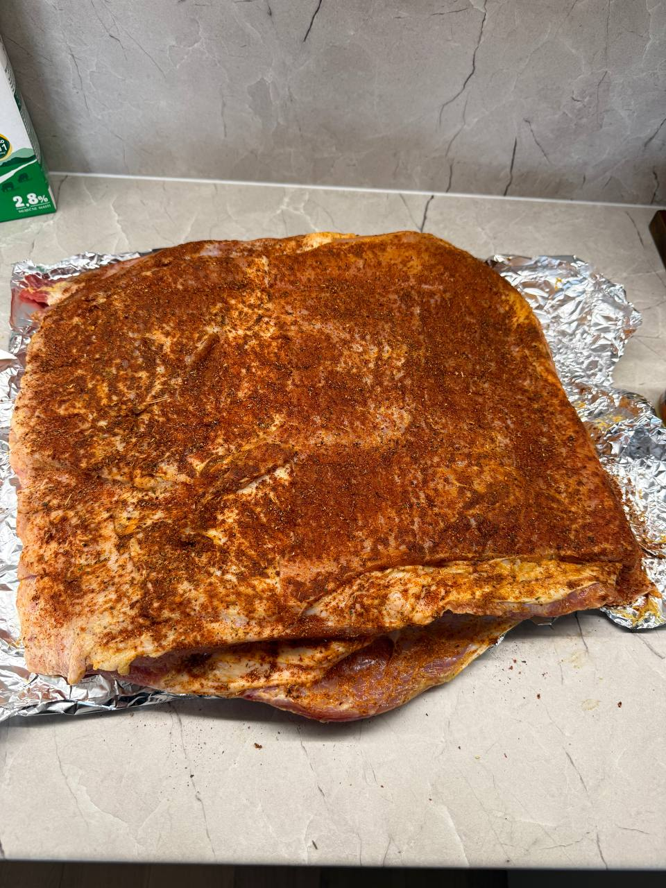

Kamado • osnovni recept • verzija 1
Teleća rebarca na kamadu
Bazni plan za 4 kg telećih rebara: dry brine preko noći, tanki senf + dry rub na dan pečenja, sporo indirektno pečenje i završni premaz zadnjih sat vremena. Stranica se puni stvarnim fotkama iz ovog kuhanja.
Osnovna logika: prvo sol preko noći zbog unutarnjeg začinjavanja i bolje sočnosti, a rub tek sutra da korica ostane čišća i urednija.

Danas
- Makni samo višak tvrdih opni i neuglednih komada.
- Posoli cijeli komad s 48–60 g soli ukupno.
- Stavi u frižider otkriveno, idealno na rešetki.
To je dry brine faza. Površina se lagano suši, a sol polako ulazi u meso.
Sutra prije pečenja
- Izvadi rebarca 30–60 min prije pečenja.
- Namaži vrlo tanko senfom.
- Dodaj dry rub ravnomjerno po cijeloj površini.
Senf je binder, ne marinada. Ne treba ga puno.
Dry rub
- 2 žlice crnog papra
- 2 žlice slatke paprike
- 1 žlica češnjaka u prahu
- 1 žlica luka u prahu
- 1 žličica timijana
- po želji malo limunove korice
- vrlo malo ili nimalo šećera
Pečenje
- Kamado postavi na 140°C, indirektno.
- Peči polako dok meso ne omekša.
- Ne vodi se samo satom — prati mekoću i otpuštanje uz kost.
- Odmori 20–30 min prije rezanja.
Premaz zadnjih 60 min
- 3 žlice jabučnog octa ili limuna
- 1–2 žlice meda
- 1 žličica senfa
- 1 mala žlica Worcestershirea ili soje
- sol + papar
- po želji malo soka iz pečenja
Premazuj svakih 15–20 min u 2–3 tanka sloja.
Galerija kuhanja
Ovdje počinjemo slagati tijek recepta kroz tvoje stvarne fotke.

